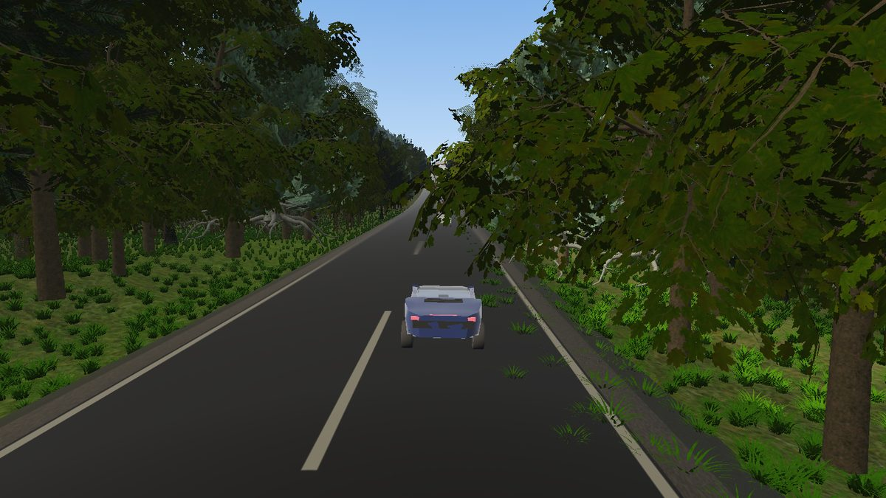
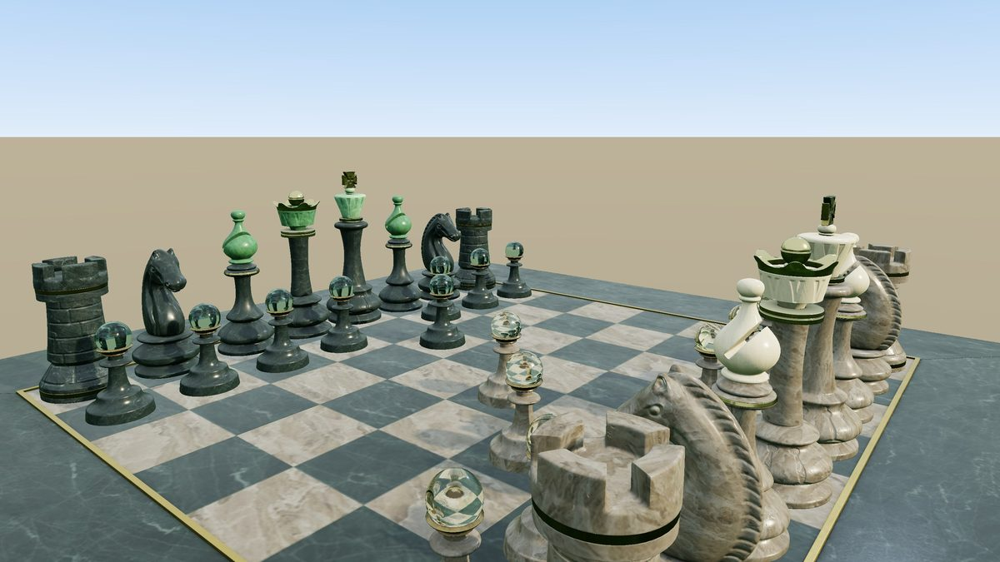
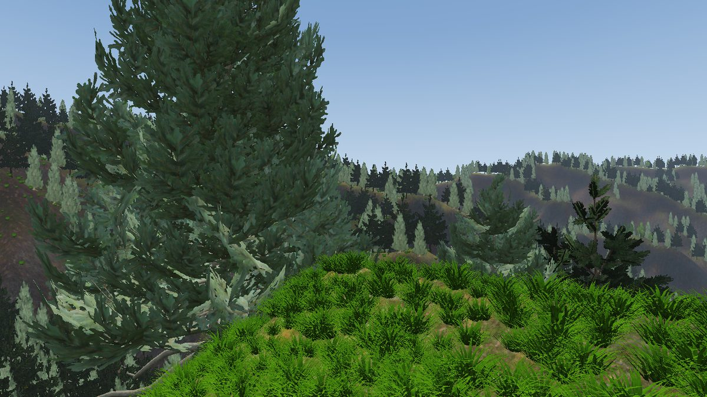
oglc-forest — half a million instanced trees and grass clumps on a real digital elevation model, walked at eye height. the forest demo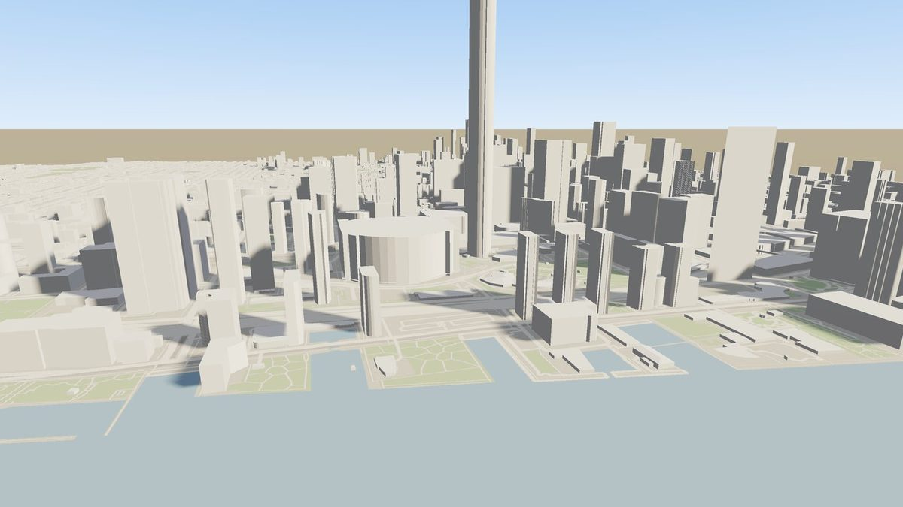
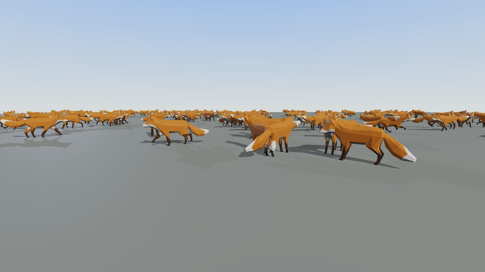
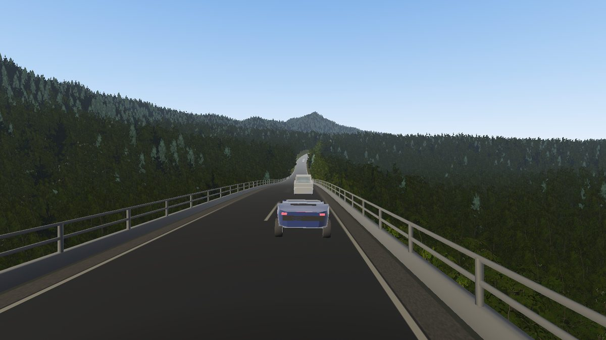
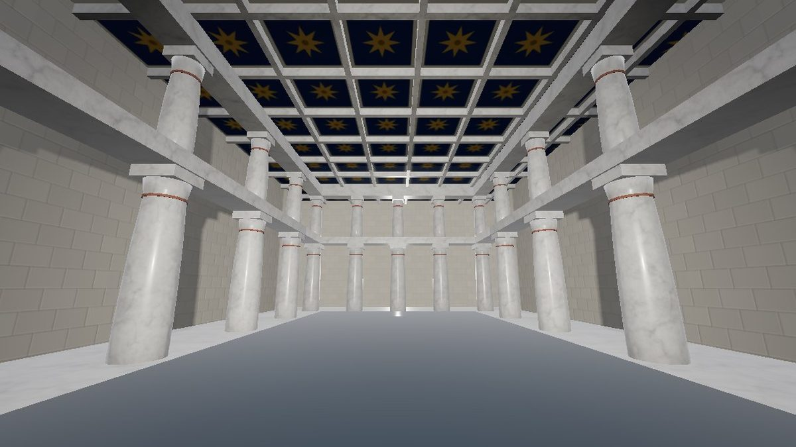
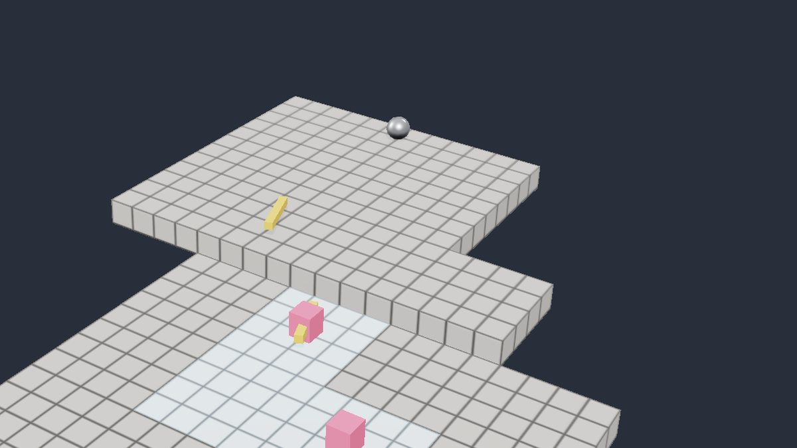
oglc-marble — a generated board, tilted by the player, with the marble rolled by the rigid-body solver. the marble demo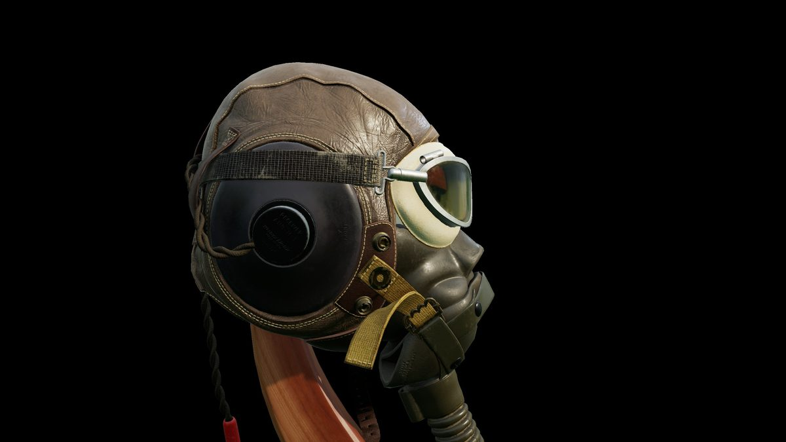
Every picture on this site is a frame the engine
drew. manifest.toml holds the recipe
for each one and tools/doc_images.py runs them again; what
is in them is credited in
ATTRIBUTION.md.
OpenGLContext is a 3D engine written in Python on top of PyOpenGL. It opens a window on any of five GUI toolkits, loads glTF 2.0, VRML97, OBJ and 3D Tiles content into a scenegraph, and draws it with a physically based OpenGL 3.3 core-profile renderer — with physics, spatial audio, an overlay UI and a movement model beside it, so that an application is the world you author rather than the plumbing under it. It is also the environment PyOpenGL itself is exercised and taught in: the tutorials and the sample code are a way into OpenGL for people who have not written any.
Install it, then open a model and walk around it:
pip install "OpenGLContext[glfw]" oglc-view model.glb
The installation notes
cover the optional extras — other backends, Draco-compressed glTF,
audio playback and video recording — and the
viewer page covers what
oglc-view can open.
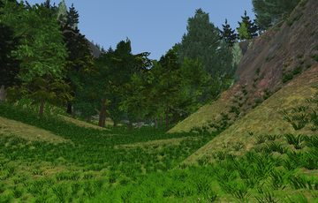
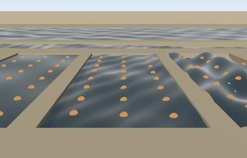
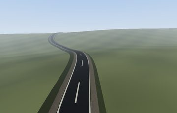
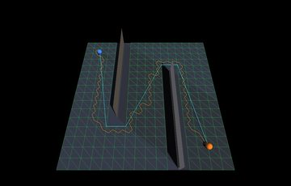
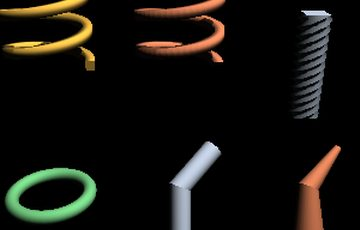
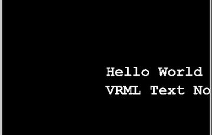
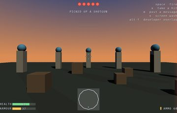
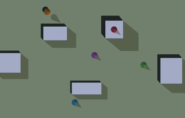
KHR_audio_emitter model, mixed in
numpy